Principal Investigator
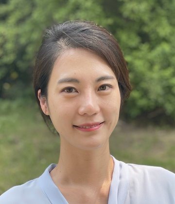
Hyun Jeong Koo, Ph.D., LEED AP BD+C
Dr. Hyun Jeong Koo is an Assistant Professor of Construction Engineering and Management in the Department of Civil and Environmental Engineering at Wayne State University. Her research examines design quality, construction risk, and material reuse in building renovation, using building information modeling (BIM), data analytics, and machine learning. Her work spans BIM-based design coordination, the adaptive reuse of historic buildings, and data-driven analysis of housing and infrastructure conditions in Detroit. She received her Ph.D. in Civil Engineering from The University of Texas at Austin and is a LEED Accredited Professional (BD+C).
Students
Prospective students interested in BIM, construction risk, renovation, or data-driven infrastructure research may contact Dr. Koo by email with a CV and a short statement of research interests.
Photos
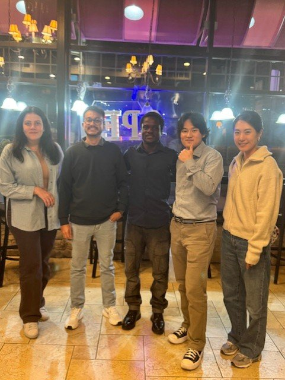
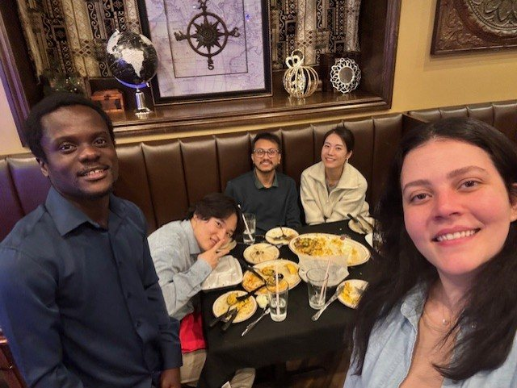
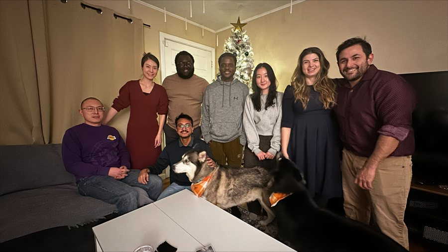
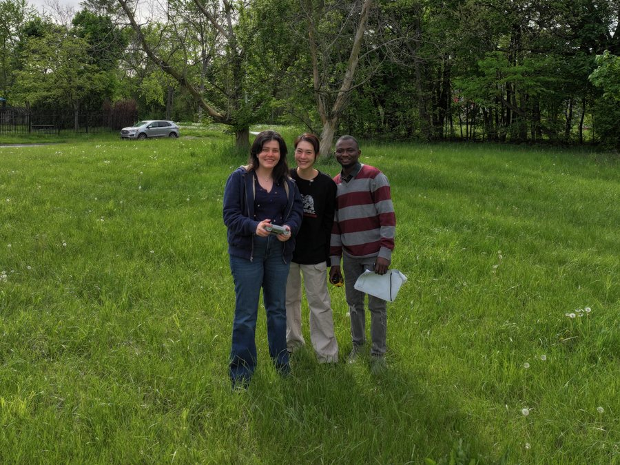
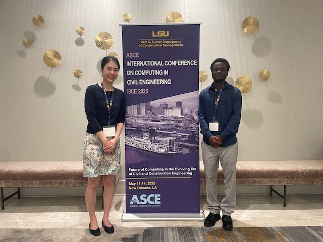
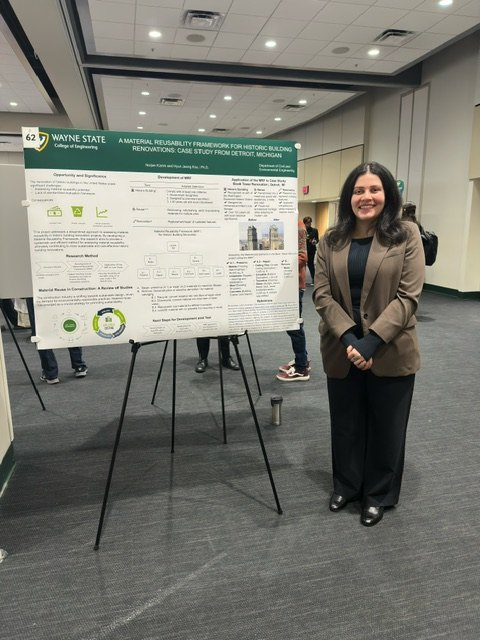
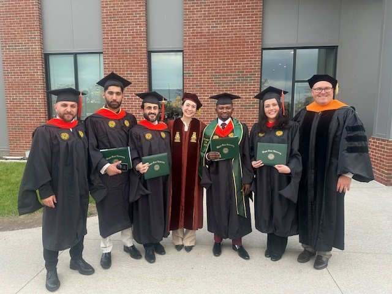
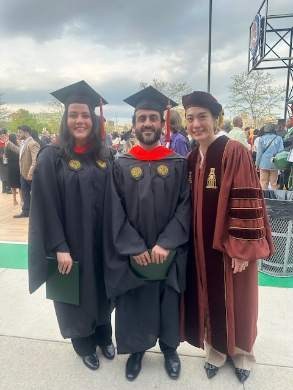
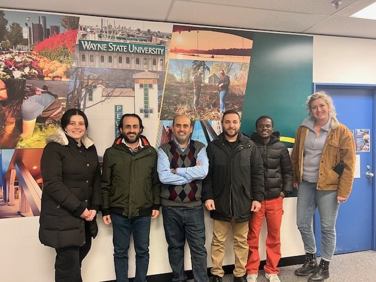
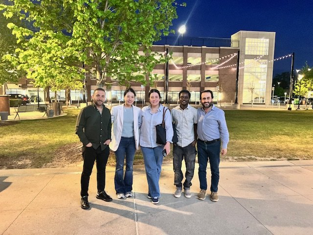